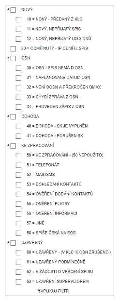

Stavy
Každý spis se nachází v různém stavu, který přesně definuje, co se se spisem děje či má dít. V programu jsou spisy rozděleny do záložek, které více méně odpovídají logice níže popsaných stavů (Stav 20 nemá u inspektora žádnou záložku).
Stav NOVÝ - (číslo 10 - 12) - spis je předaný inspektorovi, kde je na příslušné záložce připraven k detailní kontrole a převzetí do portfólia.
Stav ODMÍTNUTÝ - (číslo 20) - spis byl inspektrem odmítnut. Spis čeká na prověření supervizorem, zda se jedná o oprávněný akt.
Stav OSN - (číslo 30 - 34) - spis je připraven pro osobní návštěvu dlužníka
Stav DOHODA - (číslo 40 - 41) - inspektor provedl s dlužníkem dohodu o úhradě dluhu.
Stav KE ZPRACOVÁNÍ - (číslo 50 - 58) - spis je na nějakou dobu odložen (zaparkován) z konkrétního důvodu. Důvod je vždy specifikován stavem.
Stav UZAVŘENÝ - (číslo 60 - 63) - spis byl uzavřen (inspektorem, supervizorem, centrálou atd.) a nelze s ním již pracovat.
Tento filtr slouží supervizorovi k rychlému vyfiltrování spisů požadovaného stavu, přičemž je možné touto formou kombinovat i několik nesouvisejících filtrů (například si supervizor nechá zobrazit spisy Odmítnuté a vV žádosti o vrácení).